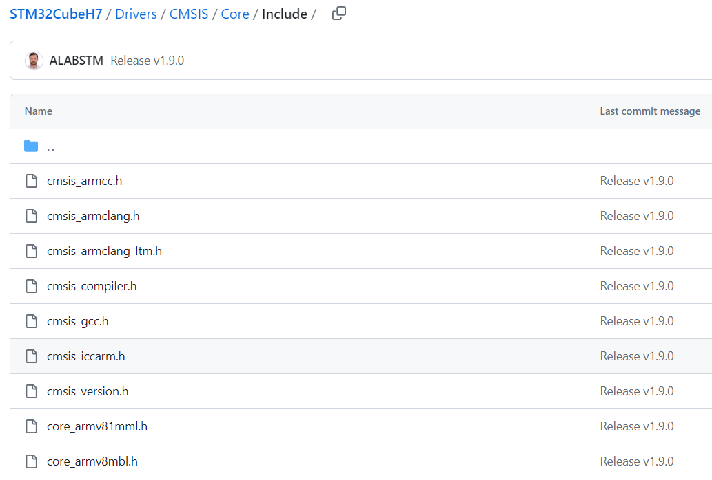
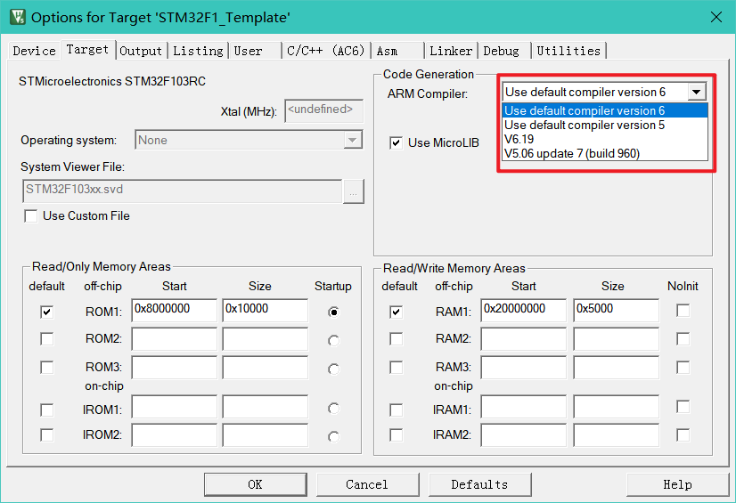

这里的内容可以提高自己嵌入式开发的水平。当然要是没兴趣看可以直接跳到下面的ARM Compiler的前四部分（安装AC5编译器、升级AC6编译器、EIDE配置ARM Compiler和AC6汇编器说明）。
Template里的警告等级是比较高的，编译会有较多的警告，我只关闭了一些不太常用的警告。隐式类型转换、变量未初始化、变量没有使用、没有返回值、没有宏定义，都会报警告。警告是帮助我们检查代码潜在错误的，不要忽视这些警告，有时候无法解决的阴间问题往往就在这里。
ARM Compiler Download：https://developer.arm.com/Tools%20and%20Software/Arm%20Compiler%20for%20Embedded
AC5 Documents：https://developer.arm.com/documentation/dui0472/m
AC6 Documents & Release Info: https://developer.arm.com/documentation/100748/0621?lang=en
ARM Embedded GNU Toolchain Download: https://developer.arm.com/downloads/-/gnu-rm
GCC Documents: https://gcc.gnu.org/onlinedocs/gcc-8.3.0/gcc/
CMSIS对编译器的兼容
STM32之所以兼容各家的编译器，是因为CMSIS已经处理好了编译器的兼容。
在ST的CMSIS中，有若干个针对编译器的头文件。在ST官方GitHub仓库/各系列的Cube包/Drivers/CMSIS中可以找到ST的CMSIS包。

可以看到，cmsis_armcc.h是AC5编译器头文件，cmsis_armclang.h是AC6编译器的头文件，cmsis_gcc.h是GCC编译器的头文件，cmsis_iccarm.h是IAR编译器的头文件。cmsis_compiler.h对编译器进行判断，然后包含不同的头文件。
/*
* Arm Compiler 6 (armclang)
*/
#if defined (__ARMCC_VERSION) && (__ARMCC_VERSION >= 6010050)
#include "cmsis_armclang.h"
/*
* GNU Compiler
*/
#elif defined ( __GNUC__ )
#include "cmsis_gcc.h"
/*
* IAR Compiler
*/
#elif defined ( __ICCARM__ )
#include <cmsis_iccarm.h>
...
/*
* TI Arm Compiler
*/
#elif defined ( __TI_ARM__ )
#include <cmsis_ccs.h>
...
/*
* TASKING Compiler
*/
#elif defined ( __TASKING__ )
...
/*
* COSMIC Compiler
*/
#elif defined ( __CSMC__ )
#include <cmsis_csm.h>
...
/*
* Arm Compiler 4/5
*/
#elif defined ( __CC_ARM )
#include "cmsis_armcc.h"
#else
#error Unknown compiler.
#endif
在Drivers/CMSIS/Device/ST/Source/Template中包含了各个编译器所对应的startup汇编文件。不同编译器的startup不通用（如果AC6使用armasm可以使用AC5的startup，但会抛出一个warning，让你使用新语法以使用新的汇编器）。
Build基础概念
Build是指将源代码通过编译、链接生成可执行程序的过程。
而工具链（ToolChain）包括编译器（Compiler）、链接器（Linker）等。总的来说就是用一套工具把可以把人能看懂(maybe)的代码转换成机器能看懂的指令。
下面的图是ARM工具链的运行流程，编译器把每个.c, .cpp, .s文件编译成目标文件.o，然后经过链接器将目标文件链接为可执行代码。
STM32有一个启动文件startup，这个文件定义了STM32一些最基本的东西，比如内存堆栈，中断向量等。因此需要一个汇编器ASM编译汇编文件。关于这个文件参见startup启动文件分析。
 ARM工具链运行流程
ARM工具链运行流程
配置好工具链就可以不依赖Keil MDK开发。不局限于Windows，可以在MacOS，Linux上开发。Keil MDK只有Windows版本。
STM32主流的工具链有ARMCC, ARMClang, IAR, GNU for arm。其实主流的C/C++工具链也就gcc, clang, msvc。gcc和clang都是开源的。msvc是微软家的东西，不可能开源。所以其他人想做编译器也只能从gcc和clang下手，又不可能像苹果那样招来Chris Lattner(llvm之父，clang就是基于llvm的)一样的大神。
PS：Clang是编译器前端，负责预处理和IR代码生成，编译、链接、优化都是交给后端LLVM去处理。而GCC编译器是将预处理、编译在一个程序里处理。AC6也不是完全使用Clang编译，汇编代码如果使用armasm是交给gcc去处理。如果使用armclang，可能需要GNU语法。在最新Keil版本中armclang支持arm语法。
ARMCC/Clang, IAR都是商业软件，不免费。GNU for arm是开源工具，商业免费。
在单片机中，由于计算能力较低，因此有些函数、变量在内存当中的分配，链接器会提前做好，也就是说，某些函数和变量的地址是固定的。对于Cortex-M内核，工具链都会带一个PreFix，叫做arm-none-eabi-。eabi指的是Embedded Application Binary Interface。
ABI是指Application Binary Interface，也就是二进制应用程序之间的一个接口。那么什么是二进制应用程序呢？Windows上就是我们熟知的exe（exe的全称叫做executable，可执行的），这个exe就是编译好的二进制程序，也就是它只有机器码，没有C语言或者其他语言的代码，因此叫做二进制。给你一个程序的C语言源代码，是不是要先编译才能运行，编译出来的这个东西就是二进制程序。那么Interface怎么理解呢？很简单，就是exe之间的互相调用。假如我要打开Windows的设置，那么我不可能把Windows的设置自己写一遍，肯定是调用Windows的一个东西来打开设置，调用的通道就是接口。我调用了这个接口，Windows就把设置打开了。
PS: Windows下二进制程序除了exe，还有一类是dll，Dynamic Link Library，动态链接库。dll相较于exe它是一个库，而且可以多个进程共享。在Linux或类Unix上，dll就是so(Share Object)，原理类似。
拿医院看病拿药为例。我是一个exe，医生也是一个exe，药店也是一个exe。我先去调用医生的接口，把我的症状作为参数传进去，医生返回一个药方；然后我再去药店把这个药方作为参数传进去，返回一堆药。我不可能自己给自己看病，因为我没有看病的程序，而医生有看病的程序，我们直接调用就行了，但是我看不到医生是怎么分析症状然后给出药方的，因为医生的程序是编译过的二进制文件，看不到源代码。
那么还有一个东西叫做API(Applicaiton Programmable Interface)，它和ABI有什么区别呢？其实就是源代码和二进制文件的区别。API有点类似函数的调用，有函数名，参数列表；而ABI全部用的是机器码，是API的更底层实现罢了。
但是对于大多数单片机来说，塞一个二进制程序都够呛，怎么能塞多个。所以对于单片机，就不需要ABI了。
ARM Compiler
新的编译器有更多的feature，当然也可能会有更多的~~bug~~，不过还是建议使用最新的编译器。新版的编译器有更优的RAM/ROM优化，编译时间更短。而且AC6编译器是基于LLVM架构的，理论上优化会更好。
目前ARM编译器最新的版本是ARM Compiler 6.21，发布于2023年10月11日。
AC5编译器已经停止更新，最后版本是5.06，只支持到C99。因此不建议使用此编译器。建议将keil升级到最新版本（Keil MDK 5.39，AC6.21）。打开Project - Option for Target 'balabala'（魔法棒），Target选项卡，在Code Generation中可以选择编译器。

如果列表里有提示Missing，说明没有安装这个编译器，参照下面的方法安装。
ARM Compiler的最新版本是AC6.21。Keil MDK5.38所带的ARM编译器是6.19。可以自行升级ARM编译器。Template仅在AC6编译器下可编译通过。
安装AC5编译器
Keil MDK从5.37版本开始就不自带AC5编译器，编译会提示丢失编译器。如果要使用AC5编译器编译代码，按照以下方式安装。
-
下载网盘里的“ARMCompiler506_b960.msi”，也可以去官网下载：https://developer.arm.com/downloads/view/ACOMP5
-
注意路径要选择Keil安装目录\ARM\ARMCC，然后一路Next

- 安装完毕后，打开Keil，依次点击图中的序号，设置AC5编译器路径。注意第5步是上面选择的AC5编译器路径。

升级AC6编译器
最新版Keil MDK 5.39（Update, Dec 2023）已经包含AC6.21，无需升级。
Keil MDK 5.38所带的编译器版本是AC6.19，截至目前ARM Compiler最新版是6.21。可以按照下面的步骤升级。
-
下载网盘里的“Arm Compiler for Embedded 6.21.msi”，也可以去官网下载：https://developer.arm.com/Tools%20and%20Software/Arm%20Compiler%20for%20Embedded
-
注意路径选择Keil安装目录\ARM\ARMCLANG，然后一路Next

- 安装完毕后，如果Keil里显示V6.21就OK了。

EIDE配置ARM Compiler
EIDE需要指定编译器和Keil的路径才可以使用编译器。
-
点击侧边EIDE图标
-
点击Configure Toolchain（如果没有点一下下面的Operations操作），输入armcc即可出现下面的几个选项

-
依次选择AC5的目录（不能选bin，在Keil安装目录\ARM\ARMCC）、AC6的目录（Keil安装目录\ARM\ARMCLANG）、Keil MDK路径（UV4.exe或者TOOLS.INI所在位置，UV4.exe在Keil安装目录\UV4\UV4.exe，TOOLS.INI在Keil安装目录下）。如果配置正确，应该有个对勾，如上图。如果显示×，说明配置错误，重新选择路径。
-
选择Import Project导入一个Keil工程，然后在左下角依次点OK，点击Build按钮看编译是否正常。

切换编译器如图所示：

AC6汇编器说明
ARMCC需要ARM语法的汇编文件，ARMClang需要GNU语法的汇编文件。如果直接将AC5换成AC6编译无法通过。arm文件夹的startup汇编文件默认都是用的ARM语法，如果使用GNU语法需要自行修改路径使用gcc里的汇编文件。
ARM语法的特点是注释以;开头，没有.打头的标签；GNU语法的特点是注释方式与C语言相同，使用.xxx作为标签。
ARM语法的汇编文件：
Heap_Size EQU 0x00004000
AREA HEAP, NOINIT, READWRITE, ALIGN=3
__heap_base
Heap_Mem SPACE Heap_Size
__heap_limit
PRESERVE8
THUMB
; Vector Table Mapped to Address 0 at Reset
AREA RESET, DATA, READONLY
EXPORT __Vectors
EXPORT __Vectors_End
EXPORT __Vectors_Size
*********************************************************************************
GNU语法的汇编文件：
.section .text.Reset_Handler
.weak Reset_Handler
.type Reset_Handler, %function
Reset_Handler:
ldr sp, =_estack /* set stack pointer */
/* Call the clock system initialization function.*/
bl SystemInit
/* Copy the data segment initializers from flash to SRAM */
ldr r0, =_sdata
ldr r1, =_edata
ldr r2, =_sidata
movs r3, #0
b LoopCopyDataInit
CopyDataInit:
ldr r4, [r2, r3]
str r4, [r0, r3]
adds r3, r3, #4
AC6提供了两个汇编器，arm-asm和arm-clang。arm-asm是从ARMCC中移植过来的汇编器，arm-clang是从LLVM中移植过来的汇编器。如果使用GNU语法编译ARM语法的汇编文件，会抛出非常多的错误：

如果切换完编译器后汇编文件报错，打开魔法棒 - Asm - Assembler Option中选择Auto Select。

对于ARM Compiler6.11以下的版本，ARMClang不支持ARM语法的汇编文件，EIDE为了兼容性考虑没有提供armclang(Arm Syntax)选项。EIDE下面的方法配置

如果使用arm-asm编译，会抛出一个Warning: A1950W: The legacy armasm assembler is deprecated. Consider using the armclang integrated assembler instead.意思意思就是考虑升级编译器，在汇编参数中输入--diag_suppress=1950可以禁用这个警告：
注意：抛出warning再考虑添加参数，Keil中armclang可以支持ARM语法。如果没有warning就加编译会报错
 EIDE配置
EIDE配置
 Keil配置
Keil配置
编译参数
打开Project - Option for Target 'balabala'（魔法棒），Target里编译器选择version 6或者V6.xx，C/C++(AC6)选项卡，这里可以配置AC6编译器的参数。

这里也就说一下Keil中的配置，具体控制哪些参数参见上面的编译器文档。如果需要写Makefile或Makelist，需要知道控制的到底是哪些参数。
更多信息点右下角Help查阅。
Preprocessor Symbols
控制-D参数。
预处理。Define是宏定义，跟在代码里使用#define是一样的。这里的宏定义主要是针对CMSIS部分。USE_HAL_DRIVERS意思是使用HAL库，如果是使用HAL库则编译HAL库的代码。
第二个，STM32F429xx是具体芯片的系列，ST的HAL库是针对F1,F4,H7这样整个芯片家族的，每个系列的外设也不一样。比如F407有6个串口，168M的工作主频；而F429有8个串口，180M工作主频，不能简单粗暴的把F429的代码烧录到F407中。因此需要定义芯片到底是什么系列的，从而定义芯片的外设资源。图中可以看到，我们芯片中的各种外设都定义在芯片系列的头文件中。

这个地方也可以添加一些宏定义来指定特定的编译行为。比如要使用旧版HAL库的CAN代码，添加HAL_CAN_LEGACY_MODULE_ENABLED宏即可。
Execute-only Code
控制-mexecute-only参数。
是指将代码段放在ROM的XOM区域。这部分区域只能由CPU去执行，而不能用其他手段读取。开启可以保护固件不被窃取。

Optimization，优化等级
控制-O参数。
可以通过它来减少代码体积或者提高运行效率。下面是ARM对优化选择的建议：
| 目的 | 优化等级 |
|---|---|
| 更小的代码体积 | Oz, Omin |
| 更快的运行速度 | O2, O3, Ofast, Omax |
| 调试且没有代码冗余 | O1 |
| 源代码与生成的汇编码对应 | O0（不优化） |
| 更短的构建时间 | O0（不优化） |
| 平衡代码体积和运行速度 | Os |
速度和空间要有所取舍，根据实际需求选择时间换空间还是空间换时间。
O0：就是不优化，C代码什么样就转换成什么汇编代码。
O1：相较于O0会启用内联函数，优化不使用的变量和函数。
O2：相较于O1优化内联函数，优化循环语句（优化循环语句主要通过loop unrolling，循环展开），优化向量。
loop unrolling循环展开是指将循环代码展开，比如下面代码：
/* 不用循环展开 */
for (int i = 0; i < 5; i++) {
printf("Hello");
}
/* 循环展开之后 */
printf("Hello");
printf("Hello");
printf("Hello");
printf("Hello");
printf("Hello");
经过循环展开以后，少了一个变量i，而且也不需要判断循环条件，对于CPU来说可以减少资源开销。
O3：相较于O2进一步优化内联函数，进一步循环展开，优化向量。
Os：Os是为了更快的运行速度，从而牺牲空间。与O2，O3相近。相较于O3主要减少内联和循环展开。
Oz：不使用LTO的前提下减小代码体积。以时间换空间。这个级别下会根据内联函数的调用次数判断是否使用内联。如果一个函数调用次数较少，内联比不内联的体积更小，那么才会使用内联。禁用循环展开，向量优化。while会取代do while。会启用Outline，也就是寻找编译以后相同的汇编代码，只存一次。
Omin：和Oz相近，相较于Oz会启用LTO，删除没有使用的代码，优化内存访问。消除虚函数（C++）。
Ofast：与O3相近，相较于O3可能会增加代码体积。
Omax：最大程度优化，获得最快的运行速度。不会严格检查语法错误（参照Strict ANSI C）。
以下面代码为例，看看O1相较于O0有什么区别：
int test() {
int x = 10, y = 20;
int z;
z = x+y;
return 0;
}
O0生成的汇编代码：
test:
.fnstart
.pad #12
sub sp, sp, #12
mov r0, #10
str r0, [sp, #8]
mov r0, #20
str r0, [sp, #4]
ldr r0, [sp, #8]
add r0, r0, #20
str r0, [sp]
mov r0, #0
add sp, sp, #12
bx lr
首先将10存入，然后再将20存入，相加，最后返回。
O1生成的汇编代码
test:
.fnstart
movs r0, #0
bx lr
直接将r0寄存器设置成0，然后返回。
编译器发现test函数中的2-4行是没用的，直接优化。
如果这时候我们单步调试，可能就看到从第1行直接跳到第5行，所以调试最好不开优化。
Link-Time Optimization, One ELF Section per Function
这两个选项是针对链接器的优化。
Link-Time Optimization, 链接时优化：控制-flto参数。在链接的时候可以做许多优化。启用LTO以后链接器会对整个程序分析是否有可以内联的、有相同的代码可以优化的、模块里有没用的函数或者变量的，然后统统优化掉。启用LTO以后会使链接时间变长。
One ELF Section per Function, 控制-function-sections参数。每个函数一个ELF段：
MDK对这个选项的解释：
The One ELF Section per Function option tells the compiler to put all functions into their own individual ELF sections. This allows the linker to remove unused functions. An ELF code section typically contains the code for a number of functions. The linker is normally only able to remove unused ELF sections, not unused functions. An ELF section can only be removed if all its contents are unused. Therefore, splitting each function into its own ELF section allows the compiler to easily identify which ones are unused, and remove them. Selecting this option increases the time required to compile your code, but results in improved performance.
也就是说，每当编译器编一个函数时，会把他放到ELF段里。当链接器去链接时，可以发现那些函数没有使用，然后移除。
Warnings, Plain Char is Signed, Language C/C++
点开Warnings下拉框可以选择警告等级，选择All-warnings会有较多的报错，且大多数都是HAL库底层的报错。不建议选择No Warnings，警告是用来检查代码的潜在逻辑错误的，如果选择No Warnings，可能会产生阴间问题。也可以使用-Wno自行关闭部分警告。
Turn Warnings into Errors：把警告转换成错误，控制Werror参数。勾选以后警告都会变成错误，编译无法通过。
Plain Char is Signed，字符使用有符号整数：控制fsigned-char参数。勾选后，char是有符号的1字节整数，等同于int8_t；不勾选就是无符号数，等同于uint8_t。默认是无符号的。
Language C/C++, C/C++语言标准：控制-std参数。可以选择C/C++编译标准。建议C99以上。各标准之间的区别，自行搜索。
Keil MDK最新版最高支持到c11(gnu11)和c++17(gnu++ 17)。
Short enums/wchar, use RTTI, No Auto Includes
Short enums/wchar：短枚举/宽字符，控制fshrot-enums和fshort-wchar参数。启用以后可以优化枚举类型和wchar字符变量，减小代码体积。
短枚举：默认枚举类型的类型都是int32_t，有些地方用不到这么大的范围。因此编译器可以根据枚举的值选择范围最小能容纳枚举的类型。比如一个枚举类型的值没有超过100的，那么编译器会给他分配int8_t。
宽字符wchar是C++引入的为了处理更广泛字符集的字符变量类型，包括Unicode。我们都知道，char占一个字节，但是单个char变量只能处理ASCII字符，处理不了诸如汉字等多字节的字符。所以引入了whcar_t关键字用来处理非ASCII字符。默认情况下一个wchar_t字符占用4个字节，启用这个选项以后一个wchar_t字符占用2个字节。
C++11引入了char16_t和char32_t用来指定字符的字节。
PS：在GB2312编码中，一个汉字占2个字节；在UTF-8编码中，一个汉字占3个字节。
RTTI（Runtime Type Identification）运行阶段类型识别，控制rtti参数。C++特性，了解即可。
No Auto Includes：启用后，编译器不会从芯片安装的pack包中搜索头文件，必须自己指定。这里的头文件主要是指的芯片的CMSIS包，以F4为例，如果不勾选会从指定芯片的DFP包中寻找芯片的头文件。除非需要自己指定芯片的头文件，否则不勾选。
下面是AC5特有的参数。
打开Project - Option for Target 'balabala'（魔法棒），Target里编译器选择version 5或者V5.06，C/C++选项卡，这里可以配置AC5编译器的参数。

这里的选项和AC6是差不多的，主要区别几个。
Strict ANSI C：控制--strict参数。勾选以后将会严格按照ANSI C检查语法错误，比如下面的代码：
void * ptr;
ptr++; /* GNU允许, 但ANSI不允许 */
包括很多asm, typeof, inline等来自GNU的语法都无法使用。ANSI C其实就是C89标准，不推荐勾选。
Enum Container always int：控制--enum_is_int参数。勾选后，所有枚举类型都是int32。
GNU Extensions：控制--gnu参数。勾选后，可以使用GNU的一些特性，但CMSIS中必须包含cmsis_gcc.h头文件
想一想这里为什么没有链接器的选项，前面我说过，下面也有答案。
Use MicroLIB, Big Endian, Floating Point Hardware
这两个参数在Target选项卡。
Use MicroLIB：使用微库，勾选后会添加一个__MICROLIB宏定义。MicroLIB是为了减少代码体积，优化单片机运行效率，对ANSI标准库文件进行修改和裁剪的一个库。如果使用C++，微库将无法使用。
Big Endian：使用大端序。勾选后以大端序的方式存储和处理数据，ARM架构的CPU都支持大端序和小端序。下面简单说一下大小端序的区别：
对于一个整数1234567890, 十六进制数为0x499602D2.
大端序存储在内存的样子: 49 96 02 D2
小端序存储在内存的样子: D2 02 96 49
大端序对人类易于阅读, 但是对于计算机来说就不太方便, 比如要将这个数加1, 那么就需要找到最后一位的位置后再加1. 而对于小端序来说只需要在第一个位置加1就行了, 第一个位置就是一个数的最后一个位置.
具体参见维基百科。一般在做数据通信时要注意大小端的问题。
Float Point Hardware：浮点运算硬件，控制-mfpu -mfloat-abi参数。默认为Soft，即使用软件来让CPU计算浮点数。但是使用CPU计算浮点数速度会比较慢，因此Cortex-M4及更高的内核提供了FPU来加速浮点运算。
Cortex-M3没有FPU。Cortex-M4支持Single Precision；Cortex-M7还支持Double Precision；Cortex-M55还支持向量扩展。
包含路径、自定义编译参数
Include Paths用于指定编译器头文件搜索路径。
Misc Controls是指定特定的编译参数，比如让AC5报错警告信息变成日文（AC5只支持英语和日语，没有其他语言包。）：

当我们每更改一个编译设置时，Compiler Control String都会变化，这里显示的就是最终Keil给编译器的参数。我们也可以把这里复制，用命令行去编译，效果是一样的。
实际编译效果
这里我以lvgl stress代码为例，219个C文件，1个汇编文件，看看各种编译级别生成的代码有什么不同。
STM32F103平台，HAL库版本1.1.9，Ryzen5 5600H全核心编译，所有代码全编译。
AC6.21, C11/C++11, AC5 like warnings，测试结果
| 选项 | RAM使用 | ROM使用 | 构建时间 |
|---|---|---|---|
| O0，关闭LTO与One ELF | 37.7KB | 453.2KB | 10秒 |
| Ofast，关闭LTO与One ELF | 37.6KB | 359.1KB | 12秒 |
| Omin，关闭LTO与One ELF | 37.6KB | 241.2KB | 12秒 |
| Os，关闭LTO与One ELF | 37.6KB | 289.4KB | 12秒 |
| O0，打开LTO与One ELF | 37.0KB | 347.1KB | 14秒 |
| Ofast，打开LTO与One ELF | 37.0KB | 368.7KB | 21秒 |
| Omin，打开LTO与One ELF | 37.0KB | 180.2KB | 15秒 |
打开LTO会使链接时间变长，但能显著降低代码体积。
AC5.06, C99, All warnings，测试结果
| 选项 | RAM使用 | ROM使用 | 构建时间 |
|---|---|---|---|
| O0，关闭One ELF | 37.5KB | 318.4KB | 13秒 |
| O1，关闭One ELF | 37.5KB | 264.4KB | 13秒 |
| O3，关闭One ELF | 37.5KB | 250.5KB | 13秒 |
| O0，打开One ELF | 37.5KB | 258.5KB | 13秒 |
| O1，打开One ELF | 37.5KB | 218.7KB | 13秒 |
| O3，打开One ELF | 37.5KB | 208.0KB | 15秒 |
GCC将编译和链接做成了一个组件，所以没有LTO选项。LLVM是模块化设计，编译和链接是两个组件。
数据仅供参考，可以自行编译一个较大的工程测试。
调试Debug
这里的调试不是指改一个参数，下进去；然后看现象，然后再改参数，再下进去。看函数有没有进，函数哪里加个printf，这tm叫锤子调试，不嫌麻烦吗？人家费尽心思写的调试功能不用是吧，非得折腾自己。
如何使用调试，Step into, Step over怎么用，自己网上学，这里不讲。调试几个关键的就是单步、反汇编、查看内存数据、查看寄存器数据。
使用Keil调试非常简单，编译后点击Start/Stop Debug Session即可进入调试。

使用VSCode调试首先下载gcc for arm toolchain, openocd，然后将他们添加到环境变量中。在Flash Configurations中选择下载器类型，配置一下调试器的设置（比如JLink需要选择芯片型号），选择 Run(运行)-Starting Debugging(启动调试)即可进入调试。
如果调试报错，打开\.vscode\launch.json，删除configurations中的所有配置，保存。
确保调试器选择正确，然后再按下F5，选择Cortex-Debug调试。

使用STLink的话请使用请使用OpenOCD, Interface Config选择stlink-v2.cfg。注意工作目录不要有中文，否则调试会报错。

编译信息
这部分内容请见网盘里的《STM32 MAP文件浅析_V1.1.pdf》，正点原子写的挺详细的。
RAM/ROM Layout
由于单片机内部资源寸土寸金，如果我们不外挂RAM、ROM或者NAND Flash，仅片上的资源来说是比较少的。对于STM32F429IGT6也只有256 KB的RAM和1 MB的Flash。因此在编译的时候就会
startup启动文件分析
详见《STM32 启动文件浅析_V1.2.pdf》，这里只讲一个地方。
malloc变量是分配在堆里的，函数调用需要栈，因此堆栈的大小就会影响单片机能分配的变量大小、函数进出栈。如果一个变量malloc分配的特别大，超出了堆的大小，那么就会返回NULL。堆栈的大小是在startup中的下面两个地方定义：

Stack_Size是栈大小，决定函数嵌套的深度和调用的容量；Heap_Size是堆大小，决定分配的变量大小。单位为字节，默认的Stack_Size是0x0400也就是1 KB大小，Heap_Size是0x4000也就是16 KB大小。这个值不能超过单片机的RAM大小，STM32F103RCT6是64 KB的RAM，STM32F429IGT6是256 KB的RAM。
程序的局部变量分配在栈区，动态申请的内存在堆区，全局变量在全局变量区，可以通过map文件找到全局变量的地址。
BOOT
占位